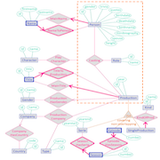
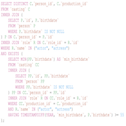
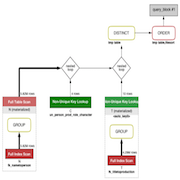

EPFL IMDb GithubPaper
A movie directory with heavy database background using real data from IMDb.
MySQL, PHP
Being the main topic of the "Introduction to database systems" course at EPFL, this application aims at dealing with large amounts of data and making them accessible through common user interfaces. Tens of millions of database records had to be gathered, imported, formatted and then accessed and modified through a web application developed in PHP. The whole application had to satisfy strict timing constraints about queries and loading times.
The Project
Conceptual modelling and normalization constraints
Developed in parallel with the lectures that taught us the good practices in the field, the conceptual model for the database had to adhere to numerous constraints and was reviewed by PhD teaching assistants who advised us on potential improvements. Although it was overly normalized, our model was very easy to user and programmable.
Advanced SQL queries
A request was made to design a list of SQL queries. Most of these queries were very specific, such as: 'For each country, list the most frequent character name that appears in the productions of a production company (not a distributor) from that country.' To ensure processing within an acceptable response time, it was necessary to carefully choose various indexes, the order of joins, and so on.
Query execution plan understanding and performance optimization
The ultimate goal of the course and project was to learn how to optimize queries and achieve a system that is as efficient as possible. Research was conducted on query execution plans provided by MySQL, and optimizations were profiled and applied to various components of the program and underlying queries in order to obtain response times of less than 1 second. This was achieved on a locally stored database with over 60 million tuples running on a laptop.
Miscellaneous
| Type | Course project |
| Degree | HES Pathway EPFL, 2nd semester |
| Course | Introduction to database systems |
| Duration | ~90 hours |
| Supervisor | Matthaios Alexandros Olma |
| Co-developers | Jason Racine, Alexandre Veuthey |